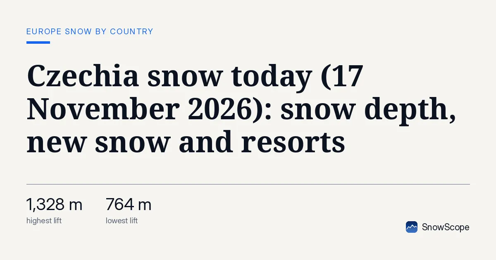

22 Czech resorts have snow above 1000 m: where the white patches are
Twenty-two resorts across Czechia have snow on their upper slopes today, out of 170 ski areas in the country. Most lie above 1000 m, where our model shows an average depth of just 1 cm—thin coverage that marks the very start of the season.
See the live snow forecast for Ramzová in the SnowScope appSnow depth, powder alerts and the 3D map, free.
Where the snow sits right now
Snow on the ground is sparse and scattered. Only 250 square kilometres of Czechia's ski terrain shows any white cover today, down sharply from 720 square kilometres yesterday. The snow line sits at 1300 m, which means that lower valleys and foothills are bare.
The Jeseníky and Krkonoše mountains hold the best snow. The Jeseníky received 9 cm in the past 72 hours, and the Krkonoše had 8 cm. These high ranges are where November snow tends to settle first and last longest. All five tracked resorts—Ramzová, Figura Praděd, Švýcárna, Lyžařský vlek Malý Šišák, and Skiareál Horní Domky—lie in or near these ranges.
| Resort | Snow depth | New snow, 72 h | Coming, next days | Top |
|---|---|---|---|---|
| Ramzová | 21 cm | 6 cm | 4 cm | 1,328 m |
| Figura Praděd | 19 cm | 7 cm | 5 cm | 1,441 m |
| Švýcárna | 19 cm | 7 cm | 5 cm | 1,307 m |
| Lyžařský vlek Malý Šišák | 16 cm | 6 cm | 5 cm | 1,153 m |
| Skiareál Horní Domky | 6 cm | 7 cm | 7 cm | 1,308 m |

Which resorts have the deepest snow
Ramzová leads with 21 cm measured at its station, topped by 6 cm of new snow in three days. Figura Praděd and Švýcárna each hold 19 cm, with 7 cm added recently. These three sit above 1300 m, where air is cold enough to preserve what falls.
Lower down, Lyžařský vlek Malý Šišák has 16 cm, and Skiareál Horní Domky has just 6 cm. The difference reflects height: each 100 metres of elevation gain makes a difference to snow survival in early November. At Skiareál Horní Domky, the low depth shows how thin early-season cover can be, even when fresh snow fell.
Snow depth by elevation band
Below 1000 m, there is no snow. The band between 1000 and 1500 m—where most Czech resorts sit—holds an average of 1 cm across our modelled area, with just 16 percent of the ground covered. This is the typical early season picture: scattered patches on north-facing slopes, bare ground on the south.
These thin layers hide rocks and rough ground beneath. Skiers heading off-piste should watch the official avalanche bulletin and use caution on any untracked slope.
What the next week brings
Snow will arrive in pulses. The first noticeable fall comes on 20 November, bringing up to 3 cm across the region in the next three days. By 23 November—the snowiest day of the week ahead—4 cm is forecast to fall. Over seven days, we expect up to 7 cm in total.
The Jeseníky and Krkonoše are likely to capture more of this incoming snow than lower zones, extending their early lead. Even so, depths will remain modest by mid-winter standards.
How conditions changed in one day
Yesterday, 720 square kilometres of Czechia had snow cover. Today, only 250 square kilometres remain white. That loss of 470 square kilometres reflects both melting at lower elevations—where overnight temperatures stayed above freezing—and the wind and sun working on exposed patches. A week ago, 830 square kilometres had snow, so the overall trend is downward even as new snow fell.
The bigger picture: Czechia versus neighbours
Across the border in Slovakia, 13 percent of ski terrain is white, compared to just 1 percent in Czechia. Poland shows 11 percent coverage. Both countries have higher mountains and received more snow: Ski centrum Dedinky in Slovakia has 42 cm, and Karpacz in Poland holds 44 cm. Over the next week, Slovakia will see up to 15 cm of new snow, and Poland up to 13 cm. For now, Czech skiers looking for deeper snow and longer runs might find better conditions in the High Tatras or the Tatras foothills just across the border.
Tips for skiers
- Expect open runs only at resorts above 1300 m, especially Ramzová, Figura Praděd, and Švýcárna. Plan visits for after 20 November when new snow is forecast.
- Stay on marked slopes. Depths below 1000 m are zero; rocks are exposed. Off-piste travel carries real risk on thin cover—check the official avalanche bulletin before leaving the piste.
- Lower resorts like Skiareál Horní Domky remain marginal. The 6 cm measured there includes both old settled snow and recent fall; runs may close or narrow as the day warms.
- Watch the forecast for 23 November. That day brings the week's heaviest snowfall (4 cm). Conditions will improve sharply afterward.
- If you have a few days to travel, compare with Slovakia or Poland, where snow depths are three to four times deeper and week-ahead forecasts are stronger.
About these numbers
Resort snow depths are the deepest snow on the resort's upper slopes from the SnowScope snow model (about 1 km, run of 17 November); they are estimates for an area, not a measurement at one point. Station values are measurements on the date shown. Forecasts can change. Always read the official avalanche bulletin before going off-piste.
Cite this report
For research, teaching or the press: the numbers and charts are free to reuse under CC BY 4.0 with this citation.
SnowScope (2026), 22 Czech resorts have snow above 1000 m: where the white patches are, https://snowscope.app/blog/en/2026/11/czechia-snow-report-17-november-2026.html, accessed 2026-11-17
SnowScope (Atlas Labs). (2026, November 17). 22 Czech resorts have snow above 1000 m: where the white patches are. SnowScope snow reports. https://snowscope.app/blog/en/2026/11/czechia-snow-report-17-november-2026.html
BibTeX
@misc{snowscope2026czechiasnowreport17novem,
author = {{SnowScope (Atlas Labs)}},
title = {22 Czech resorts have snow above 1000 m: where the white patches are},
year = {2026},
month = nov,
howpublished = {\url{https://snowscope.app/blog/en/2026/11/czechia-snow-report-17-november-2026.html}},
note = {Published 2026-11-17 12:32 UTC; accessed 2026-11-17}
}· CC BY 4.0 · Methods, data and tools →
Ramzová: snow and temperature by height, this winter vs last (tools) →
Follow Ramzová
Free: a message when fresh snow is coming, and the forecast every morning.
More snow reports

Discover the calm slopes of St-Luc Chandolin where mid-mountain snow has reached 30 cm in 98 % of winters during late December.

Ski 157 km of mapped runs in Serre Chevalier where the top of the mountain has a 100 % chance of snow by mid-December.

Puy-Saint-Vincent pairs a 44 EUR adult 1-day pass with solid December snow higher up, compared here with its big neighbour Serre Chevalier.